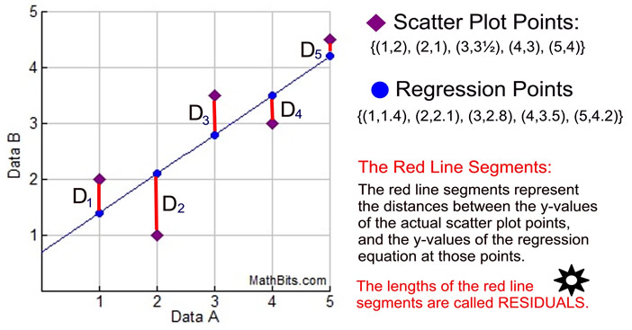

`modelsummary` 2.0.0 now uses `tinytable` as its default table-drawing
backend. Learn more at: https://vincentarelbundock.github.io/tinytable/
Revert to `kableExtra` for one session:
options(modelsummary_factory_default = 'kableExtra')
Change the default backend persistently:
config_modelsummary(factory_default = 'gt')
Silence this message forever:
config_modelsummary(startup_message = FALSE)
The following objects are masked from 'package:base':
as.Date, as.Date.numeric
######################### Warning from 'xts' package ##########################
# #
# The dplyr lag() function breaks how base R's lag() function is supposed to #
# work, which breaks lag(my_xts). Calls to lag(my_xts) that you type or #
# source() into this session won't work correctly. #
# #
# Use stats::lag() to make sure you're not using dplyr::lag(), or you can add #
# conflictRules('dplyr', exclude = 'lag') to your .Rprofile to stop #
# dplyr from breaking base R's lag() function. #
# #
# Code in packages is not affected. It's protected by R's namespace mechanism #
# Set `options(xts.warn_dplyr_breaks_lag = FALSE)` to suppress this warning. #
# #
###############################################################################
Attaching package: 'xts'
The following objects are masked from 'package:dplyr':
first, last
OLS is a “method that allows to find a line that best describes the relationship between one or more predictor variables and a response variable”howtop?, with our end result being:
\[
\hat{y} = b_0 + b_1x
\]
The best fitting line is typically calculated utilizing the least squares, which can be visually described as the deviation in the vertical direction.
Now, we will examine the relationship between a vehicle’s weight (WT) and its miles per gallon or fuel efficiency (MPG).
In a previous lesson, we found a Pearson’s correlation coefficient of r(30) = -0.868, p<0.05. Based on this information, we concluded that there is a strong negative relationship between MPG and WT. Where, heavier vehicles are associated with lower miles per gallon. Essentially this means that heavier vehicles are less fuel efficient. We will use the interpretation of this correlation as the basis of building an OLS regression to predict the value of MPG for a vehicle based on its weight. An OLS regression could be described as a common method used in regression analysis due to its efficiency in fitting the best straight line through a set of points. Thus, an OLS regression model gives best approximate of true population regression line as it minimizes the total distance from all of the points to the line.
The OLS model could be expressed as: \[\hat{y}_i = \beta_0 + \beta_1x_i\]
Then the OLS regression model line for our example is:
\[\widehat{MPG_i} = \beta_0 +\beta_1*WT_i\]
The line has the following properties:
The intercept (\(\beta_0\)), its measure is defined by the units in Y. In our case, the units used in MPG. It is the predicted value of Y (MPG) when X (WT) is zero
The slope (\(\beta_1\)), is the predicted change in Y for a one-unit increase in X. Like the correlation coefficient, it provides information on the relationship between X and Y. But unlike the correlation coefficient (unitless), it highlights the relationship in real terms of units. In our example this would look at how miles per gallon increase or decrease for a one unit increase in a vehicle’s weight (according to the R docummentation for the mtcars data set, weight is provided as a measure per every 1,000 pounds and miles per gallon are provided as Miles/(US) gallon), therefore the units are defined by the Y (MPG) and the X (WT).
For example, the data for a vehicle that weighs 2,000 pounds the unit is given as “2”
For example, a vehicle that spends one gallon of fuel per every 19 miles is given as “19”
20.1.1 How to develop the best fitting line?

Sample residual/error terms plot
The best fitting line is one that minimizes errors in prediction or one with the Minimum sum of squared residuals (SSR). For more details, you can watch this video:khanacademy2018?
\[
SSR = \sum_{i = 1}^{n}{(y_i - \hat{y_i})^2}
\]
\(residual_i = y_i - \hat{y_i}\)
It is important to note that prior to calculating the residuals, we must visualize and examine the data, which was done in the previous example. Then, we must run the regression line. We can utilize lm() to perform the OLS regression which will provide us with the model summary, including the following:
Pr(>|t|) Multiple R-Squared Adjusted R-Squared Residual Standard Error F-statistic P-value
Once the model summary is given, we can then move on to creating the residual plots. When performing this step, we have to check the assumptions of homoscedasticity and normality.
* Residuals = error terms
* $$ Residual = observed value - predicted value $$
* The larger the error term in absolute value, the worse the prediction
* Squaring residuals solve issues arising from some residuals being negative and some positive.
Assumptions
Linearity: Linear relationship between the dependent variable and the independent variables.
Independence: The observations must be independent of each other.
Homoscedasticity: The variance of the residuals should be constant across all levels of the independent variables.
Normality: The residuals / errors should be normally distributed.
No multicollinearity: In the case of multiple regression (2+ independent variables), the independent variables should not be highly correlated with each other.
Be careful about outliers
Outliers can influence the estimates of the relationship.
20.1.2 Example of an OLS regression in R
In R, the lm function command allows us to develop an OLS regression.
# model predicting mpg (fuel efficiency) using wt (weight)MPGReg<-lm(mpg~wt, data =mtcars)summary(MPGReg)
Call:
lm(formula = mpg ~ wt, data = mtcars)
Residuals:
Min 1Q Median 3Q Max
-4.5432 -2.3647 -0.1252 1.4096 6.8727
Coefficients:
Estimate Std. Error t value Pr(>|t|)
(Intercept) 37.2851 1.8776 19.858 < 2e-16 ***
wt -5.3445 0.5591 -9.559 1.29e-10 ***
---
Signif. codes: 0 '***' 0.001 '**' 0.01 '*' 0.05 '.' 0.1 ' ' 1
Residual standard error: 3.046 on 30 degrees of freedom
Multiple R-squared: 0.7528, Adjusted R-squared: 0.7446
F-statistic: 91.38 on 1 and 30 DF, p-value: 1.294e-10
The OLS regression model is then:
\(\widehat{MPG_i} = 37.285 - 5.344*WT_i\)
Interpretation:\(\beta_0\)
The model predicts that vehicles with no weight will have 37.285 miles per gallon, on average.
This is not a very meaningful intercept as vehicles with “0” weight do not exist. A meaningful intercept can be created by subtracting a constant from the x variable to move the intercept.In R as part of the lm command, this can be done by surrounding the independent variable with I() which applies the function inside and treats it as a new variable. For our example we used the rounded lowest weight of the data (1.5) to predict miles per gallon.
This procedure does not change the slope of the line
# model predicting mpg (fuel efficiency) using wt (weight)MPGReg2<-lm(mpg~I(wt-1.5), data =mtcars)summary(MPGReg2)
Call:
lm(formula = mpg ~ I(wt - 1.5), data = mtcars)
Residuals:
Min 1Q Median 3Q Max
-4.5432 -2.3647 -0.1252 1.4096 6.8727
Coefficients:
Estimate Std. Error t value Pr(>|t|)
(Intercept) 29.2684 1.1008 26.589 < 2e-16 ***
I(wt - 1.5) -5.3445 0.5591 -9.559 1.29e-10 ***
---
Signif. codes: 0 '***' 0.001 '**' 0.01 '*' 0.05 '.' 0.1 ' ' 1
Residual standard error: 3.046 on 30 degrees of freedom
Multiple R-squared: 0.7528, Adjusted R-squared: 0.7446
F-statistic: 91.38 on 1 and 30 DF, p-value: 1.294e-10
Then, the meaningful intercept model predicts that vehicles with a weight of 1500 pounds have 29.268 miles per gallon, on average.
Interpretation:\(\beta_1\)
The model predicts that on average, an increase of 1,000 pounds in the weight of a vehicle is associated with a decrease of 5.344 miles per gallon.
# define residuals res<-resid(MPGReg)# produce residual vs. fitted plot plot(fitted(MPGReg), res)# add a horizontal line at 0abline(0,0)
# create Q-Q- plot for residualsqqnorm(res)# add a straight diagonal line to the plotqqline(res)
Based on the graph above, it is visually clear that normality may not be met due to some outliers. This means that we must explore our data even deeper as it is possible that transformation of our data utilizing one of the following methods must take place:
Once the data is transformed, we can run the residual plot over again in order to achieve normality. For the sake of this presentation, we are only using an example with known limitations such as non-normality.
20.1.3 Hypothesis testing in OLS regression
The null hypothesis in this case would be that the slope is zero indicating no relationship between x and y. Or in our example, we can state that there is no relationship between a vehicle’s weight and its miles per gallon. The alternative hypothesis is then that the slope is not zero.
\[
H_0: \beta_1 = 0
\]
\[
H_1: \beta_1 ≠ 0
\]
We can test this hypothesis by using the lm summary printout which provides the p-value for the wt coefficient. This indicates that there is indeed a significant relationship between the weight of the car and its efficiency (miles per gallon used). R provides a t-value for the ‘wt’ coefficient which has a p-value of p < 0.000 as seen below:
Estimate Std. Error t value Pr(>|t|)
wt -5.3445 0.5591 -9.559 1.29e-10
20.1.4 R-Squared Value
R-squared is “a measure of how much of the variation in the dependent variable is explained by the independent variables in the model. It ranges from 0 to 1, with higher values indicating a better fit”ordinary?.
Adjusted R-squared is “similar to R-squared, but it takes into account the number of independent variables in the model. It is a more conservative estimate of the model’s fit, as it penalizes the addition of variables that do not improve the model’s performance”ordinary?.
20.1.5 F-Statistic
The F-statistic “tests the overall significance of the model by comparing the variation in the dependent variable explained by the model to the variation not explained by the model. A large F-statistic indicates that the model as a whole is significant”interpre?.
20.1.6 Visual representation
The visual representation of this model using ggplot is the following:
ggplot(mtcars, aes(x =wt, y =mpg))+geom_point()+geom_smooth(method ="lm", se =FALSE)+#se is option for coinfidence barlabs(x="Weight (per 1,000 pounds)", y ="Miles per gallon")+theme_bw()
`geom_smooth()` using formula = 'y ~ x'
As shown in the figure above, we see the summary statistics represented in a visual manner with the line of best fit. As indicated previously, we see a steep negative correlation between weight of the car and the miles per gallon (efficiency) utilized.